Status Screen
The Status screen has been expanded to display additional information.
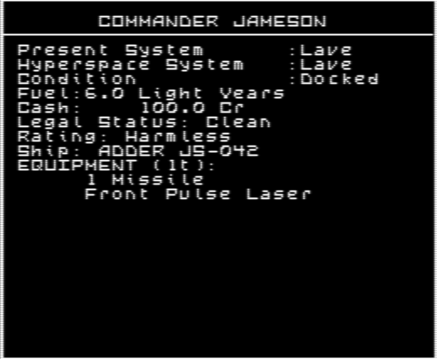
Ship: ADDER JS-042
Shows the type of your current ship and its registration ID.
EQUIPMENT (1t)
Shows the total weight of all installed equipment, excluding guided missiles. Missiles occupy dedicated slots in the ship’s hull and therefore do not take up space in the cargo hold. The total weight of installed equipment is deducted from the ship’s maximum cargo capacity. Consequently, the more equipment you install, the less room remains for cargo.
Inventory Screen
The Inventory screen has been expanded to display additional information.
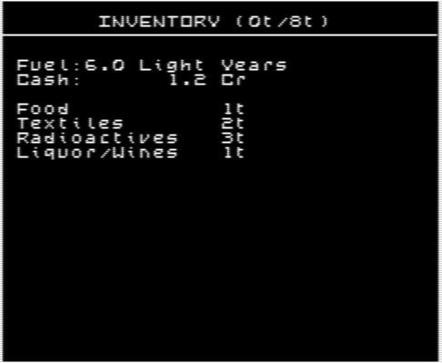
INVENTORY (0t/8t)
Shows the remaining cargo capacity followed by the ship’s total cargo capacity. The weight of installed equipment is deducted from the total, and the remainder is available for cargo. In this example, the Adder’s unmodified cargo hold has a total capacity of 8t. The installed Front Pulse Laser accounts for 1t, as indicated by EQUIPMENT (1t) on the Status screen, while cargo occupies the remaining 7t. This leaves 0t of free capacity.
Installing a Large Cargo Bay increases the total cargo capacity by an amount that depends on the ship type. This increase is automatically included in the displayed total.
Sell Equip Screen
Installed ship equipment can now be sold. Press Ctrl + 2 while docked to open the Sell Equip screen. Equipment is bought back for 50% of its purchase price.
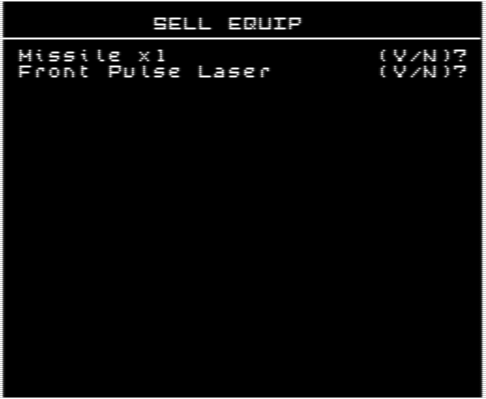
Each installed item is offered for sale in turn with a (Y/N)? prompt. The missile entry displays the total number fitted, but each confirmation sells only one missile. To sell additional missiles, open the Sell Equip screen again.
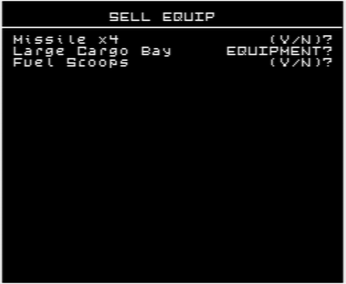
A Large Cargo Bay can be sold only if the ship’s current load will fit within the standard cargo hold after the extension is removed. Otherwise, EQUIPMENT? appears when the combined weight of cargo and installed equipment exceeds the standard capacity, while CARGO? appears when the cargo alone will not fit.
Replacing one laser with another on the Equip Ship screen follows a different, older rule: the fitted laser is credited at 100% of its purchase price. Selling a laser directly through the Sell Equip screen returns only 50%.
Buy Ship Screen
New ships can now be purchased. Press Ctrl + 3 while docked to open the Buy Ship screen.
The screen lists the ships currently offered for sale and their purchase prices. Availability depends on the system’s economy, with additional black-market ships offered in Anarchy systems.
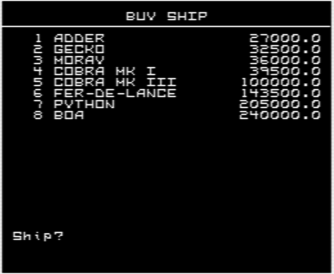
Before buying a new ship, you must sell all ordinary installed equipment, as it cannot be transferred to the new hull, along with any excess missiles that the new ship cannot carry. The Naval Energy Unit is exempt and transfers to the new ship.
When you purchase a new ship, your existing cargo is retained. It is then checked to ensure that it fits within the new ship’s standard cargo hold. A transferred Naval Energy Unit also counts as 1t.
A purchase may be rejected with one of the following messages: CASH?, EQUIPMENT?, CARGO?, or MISSILES?.
Equip Ship Screen
The I.F.F. Unit has been added to this screen and becomes available for purchase at Tech Level 7 and above.
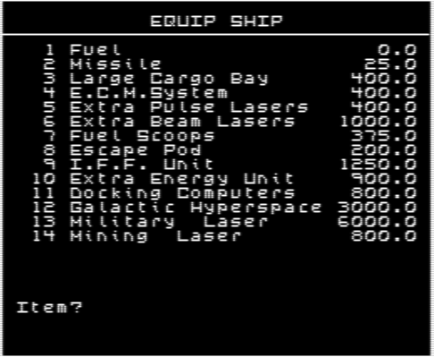
The only other change is that equipment prices now vary according to the type of ship you are flying.
In particularly disreputable systems, you may even find some less-than-legal options here.
In-Flight Cargo Jettison
A single 1t cargo canister can now be jettisoned while in flight. Press Ctrl + 2 to open the Jettison screen.
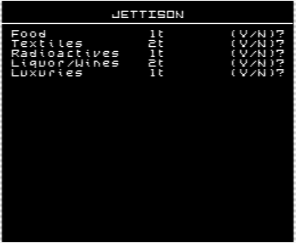
Eligible cargo types are presented in turn with a (Y/N)? prompt. Any commodity carried in one-tonne canisters can be selected, except Alien Items. Confirming a choice ejects one 1t canister. The canister retains the selected commodity, so recovering it with Fuel Scoops returns the same type of cargo.
A successful jettison is confirmed by a beep, after which the INVENTORY screen is displayed.
WARNING! Jettisoning cargo within the Safety Zone of most stations is illegal and can adversely affect your legal status.
I.F.F. Transponder and Interrogator Operations
This new device provides early warning of hostile vessels and identifies other ships.
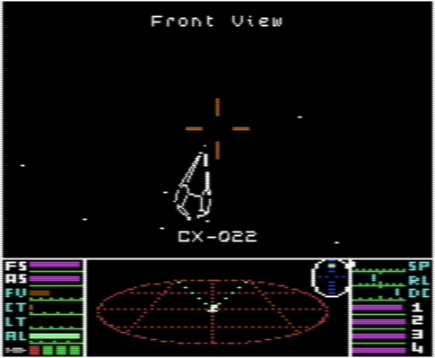
The I.F.F. Unit is fully integrated with the guided-missile targeting system and can also operate independently when no guided missiles are aboard.
Use I to activate the I.F.F. Unit. When guided missiles are aboard, the I key performs the same targeting function as the missile-targeting key T, and targeting proceeds in exactly the same way. Once a target is acquired, its registration ID is displayed if it is being transmitted; otherwise, ??-??? appears.
If no guided missiles remain aboard, pressing I activates the interrogator. A beep signals that it is ready to acquire a target, much like missile targeting. Once a target is acquired, its registration ID is displayed and the interrogator switches off. Press U to switch it off manually before a target is acquired.
Transponder operation is automatic and requires no interaction. Your ship’s registration ID is broadcast continuously.
Hostile contacts are also identified on the scanner.
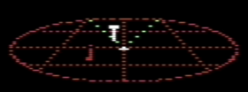
These contacts have a T-shaped blip head instead of the rotated L shape used for other contacts.
Bounty Display
After a target is destroyed, the upgraded bounty display shows the bounty awarded for that target rather than your total credit balance after the reward has been added.
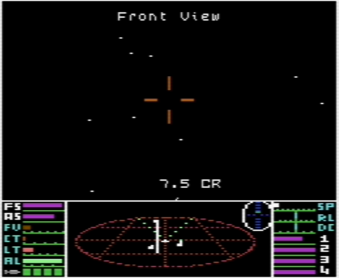
Station Docking Procedure
Stations now have a protected approach corridor extending outward from the docking entrance.
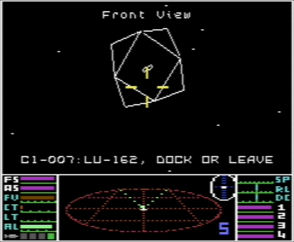
Any ship that loiters in this corridor receives a loitering warning from the station. No ship is cleared for launch while the corridor remains occupied.